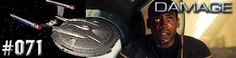
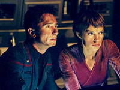
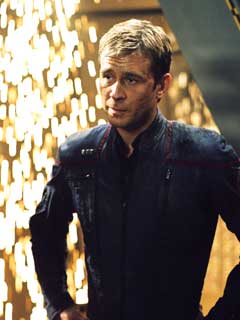
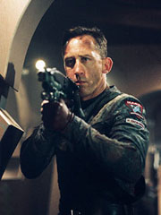

|
Enterprise
Temporada 3

Anlise do episdio por
Salvador Nogueira



|
MANCHETE
DO EPISDIO |
Comentrios:   
"Damage"
comeou por tirar da frente os danos provocados por "Azati
Prime". Um cliffhanger fora de poca como o episdio
anterior dificilmente ter uma concluso altura. De fato, foi
impossvel resolver a trama que envolve a captura de Archer e o
ataque Xindi Enterprise de maneira satisfatria --eles foram
sumariamente retirados da trama.
Essa rpida converso de Degra no parece muito consistente com
o que havamos visto do personagem em tempos idos, artificial
demais para dar continuidade ao arco. um sustentculo perigoso
para um elemento da trama que deve continuar pelos prximos episdios,
qual seja, a aliana dos humanos com pelo menos algumas faces
Xindis.
O impacto negativo j comea aqui --Archer sumariamente
libertado, sob ordens de Degra. E o cientista Xindi quem ordena
os reptilianos a cessarem fogo contra a Enterprise, praticamente
destruda. Para ser mais convincente, a converso de Degra
precisaria ter sido muito mais lenta e gradual do que foi.
Atropelada do jeito que ficou, acabou parecendo mais uma forma
improvisada de ltima hora para tirar a tripulao da NX-01 do
enrosco apresentado em "Azati
Prime".
Uma vez que fica estabelecido que pelo menos parte do que Archer
revelou verdade, passa a ser mais compreensvel que parte do
Conselho Xindi desconfie dos construtores das Esferas e de suas
intenes.
Mas a ordem do dia a bordo da Enterprise, depois que Archer volta
nave, se esconder em algum lugar e lamber as feridas. No incio,
a nave no tem nem propulsores auxiliares, o que no se dir de
fora de impulso e, r!, dobra espacial. O ncleo est
irremediavelmente danificado e a NX-01 precisa correr contra o relgio
para impedir os Xindis de ativar sua arma mortal contra a Terra.
a que comea a grande reviravolta de "Damage",
que sai de um episdio apenas regular para se consolidar como um
dos mais impressionantes segmentos da temporada. Por incrvel que
parea, o bife aqui est no desenvolvimento dos personagens.
Archer e T'Pol, mais precisamente.
Extremamente feliz a escolha de confrontar Archer com a
necessidade de simplesmente roubar um ncleo de dobra de uma nave
avariada, depois que os aliengenas, compreensivelmente, se
recusam a ced-lo, o que faria com que eles tivessem pouca chance
de retornar a seu planeta natal.
So rarssimos os casos em que um capito de Jornada nas
Estrelas precisa escolher um curso de ao deliberadamente
errado e desonesto. Os fins justificam os meios? Archer enfrenta
isso de uma forma extremamente intensa. Ele tem de roubar e
possivelmente condenar aliengenas exploradores morte para
tentar salvar a Terra. Scott Bakula tem sucesso em expor a alma
atormentada do capito, num dilogo revelador e sombrio
(literalmente), com Phlox.
Por esses dois desenvolvimentos, "Damage" um
dos episdios que mais faz pelo aprofundamento da psiqu dos
personagens. Uma belssima aquisio a um arco que, at agora,
tem feito mais em termos de enredo do que em apostas na capacidade
dramtica da vida interna de cada tripulante da NX-01. Archer e
T'Pol saem extremamente fortalecidos daqui, provando que esses
personagens podem, sim, se tornar emocionalmente relevantes.
Reed - "I really don't know
what's keeping us together, but I hope it holds."
("Eu realmente no sei o que est nos mantendo juntos, mas eu
espero que agente.")
Archer - "I'm about to step over a line, and considering the
nature of our mission, it won't be our last."
("Eu estou prestes a passar por cima da linha, e considerando a
natureza de nossa misso, no vai ser a ltima vez.")
Conselho Xindi - "Why should we take Archer's word over Hers? -
Because Archer has given us something she hasn't -- proof!"
("Por que deveramos tomar a palavra de Archer sobre a dela? -
Porque Archer nos deu algo que ela no -- provas!")
Archer - "If it was the right thing to do, why does every one
have to tell me that it was?"
("Se isto era o mais certo a ser feito, porque todos tem que me
certificar de que era realmente?")
 "Archer forado a tomar uma deciso sobre cometer um ato de
pirataria para benefcio de se completar a misso," afirmou Rick
Berman sobre Damage. Ainda de acordo com o produtor-executivo,
"T'pol tem se aplicado minsculas doses de trillium desde o episdio
zumbi".
"Archer forado a tomar uma deciso sobre cometer um ato de
pirataria para benefcio de se completar a misso," afirmou Rick
Berman sobre Damage. Ainda de acordo com o produtor-executivo,
"T'pol tem se aplicado minsculas doses de trillium desde o episdio
zumbi".
 O departamento de arte da produo teve grande trabalho para preparar
os sets de maneira condizente a histria proposta no roteiro, afirmou
John Billingsley sobre o episdio. Considerando os danos que a
Enterprise sofreu, a tripulao realmente precisa colocar a casa em
ordem, segundo o ator.
O departamento de arte da produo teve grande trabalho para preparar
os sets de maneira condizente a histria proposta no roteiro, afirmou
John Billingsley sobre o episdio. Considerando os danos que a
Enterprise sofreu, a tripulao realmente precisa colocar a casa em
ordem, segundo o ator.
Escrito por Phyllis Strong
Direo de James L. Conway
Exibido em 21/04/2004
Produo: 071
Elenco:
Scott
Bakula como Jonathan Archer
Jolene Blalock como
T'Pol
John Billingsley
como Phlox
Anthony Montgomery
como Travis Mayweather
Connor Trinneer como
Charlie 'Trip' Tucker III
Dominic Keating como
Malcolm Reed
Linda Park como Hoshi Sato
Elenco convidado:
Casey Biggs como Capito
Illyriano
Randy Oglesby como Degra
Scott MacDonald como Comandante Rptil
Tucker Smallwood as Xindi-Humanide
Rick Worthy as Xindi-Preguia
Josette DiCarlo como Construtora da Esfera
Sinopse, trivias e ficha
tcnica por Leandro
M.Pinto